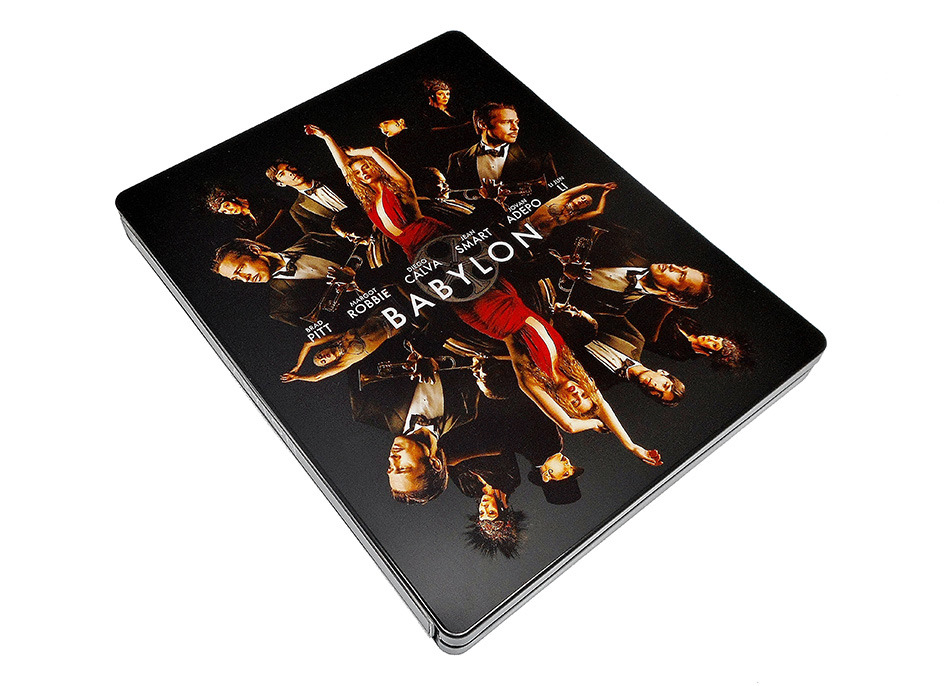
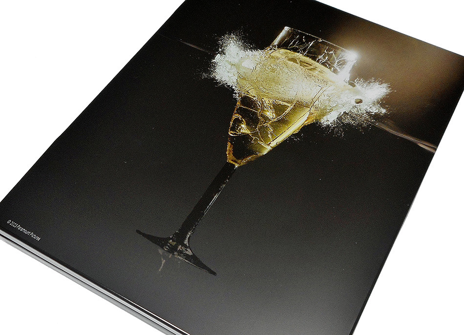
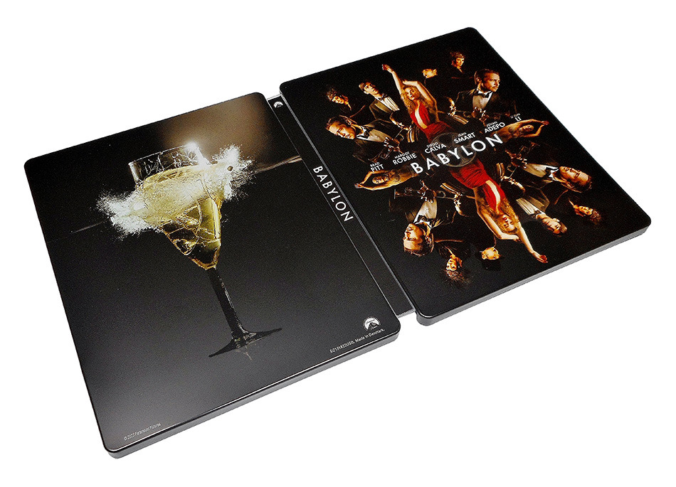

Babylon
Una historia de ambición y excesos ambientada en Los Angeles durante la década de 1920 que recorre la ascensión y caída de múltiples personajes durante la transición al cine sonoro en un momento de desenfrenada decadencia y depravación en los inicios de Hollywood.
- Fecha de Salida: 6 de Abril 2023
- Precio: 31,99 €
- Director: Damien Chazelle
- Reparto: Brad Pitt, Margot Robbie, Tobey Maguire, Jean Smart, Katherine Waterston, Max Minghella, Flea, ...
- Año: 2022
- País: EEUU
- Calificación por Edades: No recomendada para menores de 16 años


